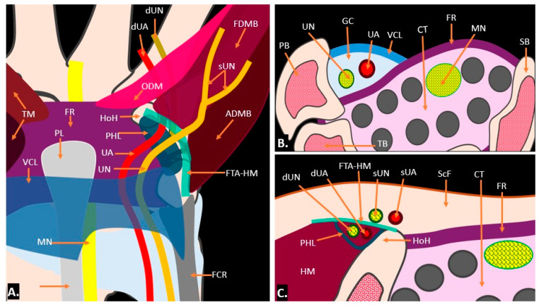

Respuesta clínica corta
¿Cómo se organiza el canal de Guyon y qué puede mostrar la ecografía?
La zona 1 contiene el tronco mixto, la 2 la rama motora profunda y la 3 la rama sensitiva superficial; la imagen busca causas compresivas y variantes.
Dato claveTres zonas · revisión anatómica y patológica
Dividir el canal de Guyon en tres zonas ayuda a relacionar ramas motoras y sensitivas con posibles compresiones, mientras ecografía y resonancia responden preguntas complementarias.
Observado
Qué encontró y cómo interpretarlo
La fortaleza es integrar anatomía, variantes y causas compresivas.
Las asociaciones entre imagen y síntomas proceden de evidencia heterogénea.
Atlas del artículo
Imágenes para entender el procedimiento
Estas figuras proceden del artículo original y se reproducen con licencia abierta verificada. Se muestran por su utilidad anatómica o técnica, no como prueba aislada de diagnóstico o eficacia.

La ilustración sitúa el nervio y la arteria cubital entre pisiforme, gancho del ganchoso, retináculo y musculatura hipoténar.
Cómo leerlaEl esquema representa relaciones típicas y no excluye variantes individuales ni confirma la causa de síntomas.
Saran y colaboradores, Figura 1 del artículo original · Fuente · Licencia CC BY.
Procedimiento del artículo
Recorrido ecográfico del canal de Guyon
El barrido parte del pisiforme y el gancho del ganchoso, identifica arteria y nervio cubital y sigue la bifurcación hacia ramas profunda y superficial.
- Entrada
- Pisiforme y ligamento palmar carpiano
- Salida
- Gancho del ganchoso y arco hipoténar
- Doppler
- Necesario para separar arteria y lesiones vasculares
- 01
Localizar la entrada
Colocar el transductor transversal en la cara palmar cubital de la muñeca.
- Referencias
- Pisiforme, retináculo, nervio y arteria cubital.
- Lectura
- Esta región corresponde a la zona mixta proximal.
- 02
Seguir la bifurcación
Deslizar distalmente hasta separar rama superficial y rama profunda.
- Referencias
- Gancho del ganchoso, músculos hipotenares y ramas cubitales.
- Lectura
- La zona ayuda a predecir si el patrón puede ser motor, sensitivo o mixto.
- 03
Buscar una causa
Explorar masas, variantes musculares, vasos, cicatriz y continuidad nerviosa en dos planos.
- Referencias
- Ganglión, arteria, gancho del ganchoso y nervio.
- Lectura
- La ecografía caracteriza estructuras superficiales; la resonancia amplía tejidos profundos.
Protocolo reconstruido de forma prudente desde el texto completo y las figuras del artículo; sirve para comprender la adquisición y no sustituye formación, supervisión ni un proceso diagnóstico completo.
Aplicabilidad
Qué significa clínicamente
Usar las tres zonas para ordenar el informe.
Combinar Doppler, dinámica y comparación con otras pruebas según la pregunta.
Límite
Qué no permite afirmar
Revisión narrativa.
Sin búsqueda sistemática ni evaluación formal de sesgo.
Ejemplos seleccionados.
Contexto
¿Se parece a tu paciente?
- Población estudiada
- Evidencia anatómica y ejemplos de patologías del canal de Guyon; sin cohorte diagnóstica propia.
- Diseño
- Revisión narrativa anatómica y pictórica
- Resultado evaluado
- Coherencia anatómica de las tres zonas y causas ilustradas
Fuente primaria
Lee el estudio, no solo nuestro análisis
Saran S, Reddy PS, Shirodkar K, et al. Unveiling Guyon's Canal: Insights into Clinical Anatomy, Pathology, and Imaging. Diagnostics. 2025;15(5):592. doi: 10.3390/diagnostics15050592
Responsabilidad editorial
Francisco José Extremera García
Fisioterapeuta colegiado ICPFA 4288 · Osteópata D.O.
Creador y responsable editorial de FisioLógico
- Última revisión
- Conflictos de interés
- Ninguno declarado.